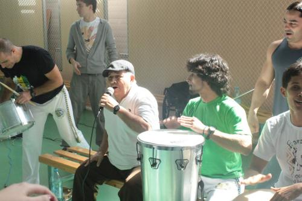
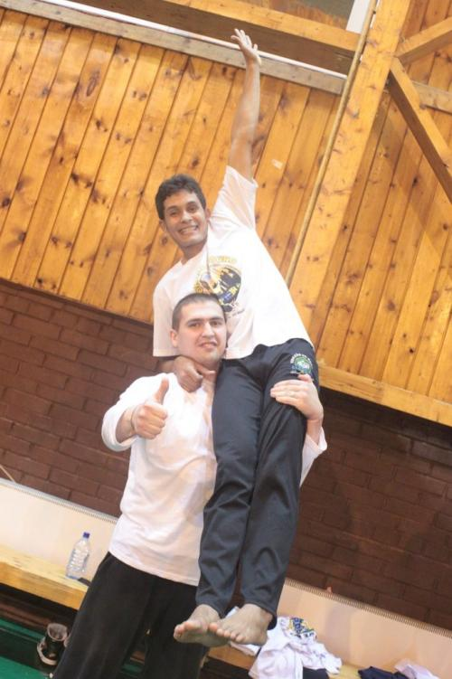

О семинаре с Суасуной, капоэйре и яблоках
Чтобы не пересказывать сто раз «как это было».
Все снимали, нажимали на кнопки, фиксировали на дисплеях, сейчас навыкладывают фоток и видео, а я слушала, смотрела и впитывала.
Приготовьтесь, сейчас будет много слов
(возможна минимальная путаница в показаниях).
Я была на семинаре с местре Суасуной „Real Brazil“ !!
В прошлый четверг вечером по дороге на батизаду Реала я заблудилась, ходила по каким-то дворам и уже начала злиться, когда встретила мальчика Егора с желтой бумажкой приглашения в руках. Дальше мы пошли вместе и ДК МАИ тут же нашлось, но поболтать мы успели. Это был разговор а-ля:
- Ты у кого занимаешься?
- Я из другой школы.
- А есть другие школы?
Вот так живешь и не знаешь, что можно по-другому.
Ниже топорная метафора:
Вот любишь ты яблоки. Но ничего другого ты никогда и не ел. А тут узнаешь, что кроме яблок есть и другие фрукты. И перед тобой открывается столько вкусов! Хочется попробовать всё и сразу …а дальше начинаются раздумья, любишь ли ты яблоки также как и раньше или, к примеру, ананасы вкуснее.
Так я и решила заглянуть на чужой семинар, но яблоки и Аше пока остаются в фаворе.
Мы все разные, тем интереснее играть с ребятами из других школ, наблюдать за ними… в какой-то момент доходит, что «правильно» и «неправильно» не существуют – у каждого своя капоэйра.
Телефон, незнакомый номер:
- Принцеса… я не гаварить по-русски…
- Эээ…
- Расслабься, это Дэн.
Было утро пятницы, мы заехали за Симоной и контра-местре Сурфиштой и отправились в оздоровительный лагерь Литвиново.
Симона говорила с Сурфиштой преимущественно на английском, но иногда начиналась бешеная смесь португеша, английского и иврита — чума!
Мы сделали остановку в Наро-Фоминске:
дождь, торговые палатки, бездомная собака с грязными боками, бабки с авоськами, пара бомжей с испитыми лицами… и мы с Симоной стоим у магазинчика под козырьком, а Сурфишта делится с нами сникерсом.
В Литвиново мы поели, кинули вещи и побежали на мастер-класс по афро с местре Шикочи. Движения местного афро оказались довольно легкими, но танцевать было приятно, заодно мы хорошенько разогрелись.
Опция „капоэйра на английском языке“ – это очень удобно. Все трудности перевода, когда добрая половина смысла и шуток теряется, обычно разочаровывают…
Начался мастер-класс с местре Иданом, приехавшим из Израиля со своими кудрявыми учениками.
Первые минут десять я хотела встать уйти. То, что он говорил, казалось мне противоестественным для капоэйры, у меня в голове начался белый шум, но я переборола это и стала слушать. Он говорил: хорошо, когда джинга свободная. В нее можно включать элементы танцев — афро, самбы, даже форро — всех бразильских штучек, формировать из них собственный стиль игры. С одной стороны капоэйра очень похожа на шахматы. Должны быть продуманы все движения и свои, и другого игрока. «Если ты умеешь точно бить мартелу — ты быстрый и сильный капоэйрист, но если ты можешь уйти от мартелу и контратаковать — ты действительно хороший игрок».
Нужно контролировать все движения, чтобы вовремя остановить удар, если противник не успеет уйти. Можно довести удар до конца, но лучше дать человеку подумать «чтобы он смог найти ответ на ваш вопрос, и вы могли продолжить диалог».
В то же время в роде важно поймать поток, то есть не думать, что ты делаешь, а просто двигаться в ритме, творить игру – „cook the game“. Нужно очень много и долго тренироваться, прежде чем все движения станут привычными и удобными для тела. Он говорил «поток» – «flow».
В моей вселенной это и есть „mandinga“ – магия капоэйры, когда происходящее в кругу завораживает, как огонь…
Во время занятий с учениками для Идана самое важное, чтобы никто не травмировался, чтобы было весело и только на третьем месте – процесс обучения.
Потом мы сделали 20 род (!) по всему залу и играли – порадовало, что можно много играть с разными людьми, набираться опыта, но качало не так. Многие не пели, даже хлопать забывали, музыка распылялась по залу. Хотя чуть позже все собрались воедино: рода в 300 человек, запевает гранже местре Суасуна и в кругу мастера и профессоры сменяют друг друга.

Местре Виргулино оказался очень мощным, он, наверно, и руку-то до конца согнуть из-за мышц не может. И, когда он выходил играть, все тихо посмеивались, ожидая жести в духе «кровь и капоэйра». В какой-то момент игры он неожиданно становился быстрее ритма, бил в противоход мартелу, использовал руки, периодически проводил захваты.
Суасуна сказал даже что-то типа: «Важно найти свой путь и не сбиться с него. Вот все критикуют местре Виргулино, а он остается верен себе» xD
И все пошли есть. Вообще, интересно, учитывая количество евреев среди участников семинара, что на ужин была свиная отбивная, на завтрак – омлет с ветчиной, а в обед – свиные котлеты. Когда в субботу вечером подали рыбу, Симона танцевала.
Некоторые вот не обламывались и готовили в номерах. По коридору мне навстречу шел живший по соседству профессор Пинокио:
- Do you have… переходник?
- Ага.
Откуда он взял сие русское слово? Но самое странное, что переходник у меня действительно был.
Приехал Ерч. Нас заселили в двухместный номер. В ходу были шутки (о ужас!) про пожилую семейную пару и что мы аутсайдеры. Но в каждой шутке есть доля шутки. Правда заключалась в том, что девочки, которые сидели с нами за одним столом, не здоровались, на „приятного аппетита“ говорили «спасибо» и продолжали есть, стараясь не смотреть в нашу сторону.
После ужина на весь корпус уже стоял запах кальяна, мы собрались в одной из комнат и пели по очереди под пандейру, но впереди было еще одно занятие.
А у некоторых начался шабат. Например, инструктора Пиу-Пиу пришла в платье и не стала тренироваться.
Ерч заехал с миалуи мне по руке и тут же типа оправдался:
- Бей своих, чтоб чужие боялись. А то чё-то ты мягко играешь.
Под конец устроили самбу. Круг был запредельно маленький, и девочки слишком быстро сменяли друг друга, так что никто не успевал толком потанцевать. Я играла на пандейру, и меня уже оттеснили чуть ли не в третий ряд. По привычке я стала раздвигать круг руками – меня тут же попросили не вести себя агрессивно.
Эээ… извините, ребята! Надо, наверно, было покричать что-нибудь типа «сделайте роду пошире!» – хотя кто-то пытался – и не работает.
Разошлись за полночь. В холле нашего корпуса из колонок играло форро, кто-то пытался воспроизвести связки с дневных занятий, парочка в углу обнималась, а мы с Ерчем решили потанцевать. Постепенно народ стал подтягиваться, кто-то выключил свет и понеслась! Аж стёкла запотели. Оказалось, что ребята из Израиля очень хорошо танцуют. Форро-вечеринка продолжалась часов до четырёх утра.
В три утра я вышла на улицу подышать воздухом после этой жары. Из соседнего корпуса слышался хор голосов: la-laue-laue-laue-laua!
Утро настало без чего-то девять. После каши на завтрак я уползла досыпать. Тренировка началась в 11.
Нас поделили на группы: начинающие, старшие ученики, преподаватели. Мы отправились к старшим, соответственно. Первую тренировку вел местре Идан, впрочем, про его мировоззрения я уже рассказала.
Следующим был контра-местре Маскара. Ерч звал его „тот парень похожий на миллионера из трущоб“. Связки были хороши, и мне удалось с ним поиграть в учебной роде. Юра: «Он классный! Я даже постоял рядом с ним… на руках».
Местре Шикочи провел общее занятие по макулеле. Санёк не любит макулеле в принципе, а я под конец просто сдалась, и уж точно не из-за сложности элементов. Триста человек с палками в руках, выставив одну из них перед собой, бегут через зал с кличем «ааааа!!» – мы с Саньком недоумевали, а Ерч ушёл в бассейн.
После обеда, какого-то свободного времени и тренировки была рода. Суасуна играл: прогулялся по роде, подождал, пока противник попрыгает акробатику, вовремя подловил, пнув ножкой и продолжая улыбаться – так было со всеми, кто успел к нему выйти.
Вечер. Обещали форро-вечеринку.
Я в сарафане, Симона в юбке, а после пары трэков с форро врубили реггитон, и мы по большому счету оказались за бортом этого праздника жизни с грязными танцами.
Началась батукада и стандартная уже песенка-игра „soco, bate, vira“. Через несколько минут застукала местре Шикочи в коридоре: он пытался научиться быстро делать движения из «soco, bate, vira». Заметив меня, он показательно закрылся руками… но тут же продолжил тренироваться и даже нашлось с десяток ребят, всячески ему помогавших. Чуть позже он вышел на сцену, собрал всё внимание и публично продемонстрировал новый навык. В продолжение батукады, как я поняла, поддавшие мастера немного нарушили программу, замутив роду.
Около часа ночи, когда официальная вечеринка закончилось, все опять постепенно перебрались в наш корпус и затанцевали…
Но до этого был запуск китайских фонариков – больше сотни огоньков улетали в небо под барабаны и самбу ди рода в мокрой траве. Израильские парни уходили, продолжая наигрывать самбу, заглядывая по пути в каждый корпус на пару минут, так сказать, постучать.
И снова в четыре утра я засыпала под звуки форро и веселые крики на разных языках.
Каким-то чудом на тренировку я опоздала только на 5 минут. Все были довольно бодры, мастер-класс вел местре Шикочи, а под одним из диванчиков сиротливо стояли две пустые пивные бутылки. В процессе занятия я проснулась и даже начала что-то понимать. Потом пришел местре Виргулино и его широкие плечи, он учил всяко ловить противника.
Мастер-класс с контра-местре Куэкой, пожалуй, самый необычный из всех. Беримбау в сочетании с мелодичной гитарой и тихий неспешный атабаке сливались в нечто расслабляющее. Мы начали повторять движения Куэки – чистой воды танцы, медленные и ненапряжные. Шутка в том, что если добавить силу и скорость, то получатся удары, но делая всё медленно и плавно, понимаешь, как нужно двигаться, чтобы правильно получалось. Постепенно движения собрались в простенькие связки, но такой формат отработки был крайне приятен.
На завершающую роду я пришла где-то к середине, как и добрая половина народа, ибо все собирали вещи. Батерия расположилась спинами к солнцу за окном – таким образом, гранже местре Суасуна и иже с ним были в потоке почти слепящего света.
Выглядело солнечно, и это не метафора.
…а семинарских футболок нам так и не досталось. Душевно попрощавшись с контра-местре Сурфиштой и Симоной, я, Ерч и Юра сели в машину, включили погромче «нашу бразильскую» и отправились… в Москву.

Вот каждый раз убеждаюсь, самое важное – это люди, которые рядом, это друзья.
К чему я об этом?
Спасибо Саше, что позвал, Симоне за то, что понимает, Дэну – за «Снежки», Ерчу – за чувство юмора. Простите, если что не так.